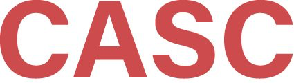

ME student at a medium-sized public STEM-ish university who should
have studied more instead of helping people do things in computer
labs.
Sysadmin/CAD/FEA co-op student at Oak Ridge National Lab before SGI
Irix got its cameo in “Jurassic Park” (“It’s a Unix system: I know
this!”).
Some skinny nerd, 1990
To give you a bit of an idea where I come from in all of this, my
LinkedIn bio that has all the fancy language about decades of experience
supporting engineering research really comes down to this:
I’m a self-diagnosed high-functioning ADHD guy who probably should
have studied more than he helped people in computer labs.
I lucked into a couple of co-op years at Oak Ridge National Lab doing
a mix of CAD support, Unix systems administration, and actual
engineering.
Who am I? (Who are any of
us, really?)
Now
Three ME degrees from the now-R2 university (1995, 1998, 2018)
Mostly-solo practitioner of all things RCD at the same university
(2000–2017, 2017–)
Perpetually online member of multiple RCD organizations (2018–)
Member of Campus Champions Leadership Team (2022–)
Compulsive advice-giver
Same nerd, not remotely skinny,
2023
That eventually turned into a bunch of degrees from my original
university, which I like to call a masters in shaking things and a PhD
in breaking things.
I stayed on as an R&D engineer in a research center, and then as
the first campus-wide HPC systems administrator in central IT.
I’m a member of way too many RCD community groups, been on the Campus
Champions leadership team for nearly 2 years, and I’m a compulsive
advice giver and rabbit-hole-chaser.
So for the folks who don’t have a lot of time for the rest of this
talk, or for the new folks that may be overwhelmed by RCD, let me go
ahead and get you what others have called the starter pack of RCD
organizations and conferences where you can find other communities and
resources as you need them.
The Starter Pack
Campus Champions
Campus Champions
One of the original RCD communities (2008)
Formerly funded by NSF XSEDE program
Over 800 members from over 300 institutions in all 50 states
Active mailing list for all topics and all RCD roles
Monthly Zoom call with planned speaker/topic
Monthly Zoom call for any other topics
Additional visibility to their institutions’ NSF ACCESS usage
The first one is Campus Champions: this was the second RCD community
that I joined about 5 years ago, the one that introduced me to Henry and
other folks via the Virtual Residency.
Campus Champions is one of the longest-running RCD communities,
starting around 2008 and formerly funded by NSF’s Extreme Science and
Engineering Discovery Environment (XSEDE). It currently has over 800
members from every state, and it includes folks from every RCD role:
facilitators, software engineers, systems administrators, etc.
We’ve got an active mailing list and fairly active Slack, with two
regularly-scheduled calls each month. One call has a specific topic and
an invited speaker, while the other one is a more free-flowing community
chat over any topic of interest to the attendees. Sometimes we start
with something hot from the mailing list, other times from recent news
items.
One other advantage to Campus Champions is that even though we don’t
have direct ties to XSEDE’s followup project, ACCESS, the ACCESS team
does provide Campus Champions extra insight into their institutions’
usage of ACCESS resources, which can help you guide your researchers
toward more efficient usage or more suitable locations for their
work.
Campus Research
Computing Consortium (CaRCC)
Campus Research
Computing Consortium (CaRCC)
Another catch-all group similar to Campus Champions is the Campus
Research Computing Consortium, or CaRCC.
CaRCC has a pretty comprehensive structure of tracks, interest
groups, and working groups. These are all ad hoc and community driven,
and the tracks tend to have one Zoom call per month with a lot of behind
the scenes coordination going on.
The biggest thing I’ll applaud CaRCC for is their ongoing and
invaluable work in professionalization of the RCD field, which helps
translate RCD roles into job family matrices that I’ve used at Tennessee
Tech, the RCD Nexus organization that puts together workshops and papers
on workforce development and benchmarking your organization against
others, and the RCD Capabilities Model to assist with that benchmarking
and also with identifying the priorities for improving your
organization.
Now those organizations are all virtual, no cost to join, and
extremely welcoming and accessible to new folks.
PEARC Conference Series
PEARC Conference Series
The de facto RCD people conference
Small enough (782 attendees in 2023)
Full range of publishing options
full papers
short papers
posters
visualization showcase
Tutorials/workshops
Birds of a Feather (BoF) sessions
Panel discussions
Go at least once.
But if you’re up for some travel, and don’t know where to go to
improve your RCD program or yourself, here’s a couple more options.
The Association for Computing Machinery hosts an annual Practical
Experiences in Advanced Research Computing Conference (PEARC), and this
is by far my top priority conference for the last few years. It’s the de
facto RCD people conference, and with around 800 people in attendance
last year, it’s small enough to where you can meet a lot of people doing
work similar to you, and not get overwhelmed.
The conference is a normal academic/professional conference with
paper and presntation tracks, a poster session, and a visualization
showcase where students, faculty, and staff can show off their work and
get ideas to take back with them.
There’s a day of workshops and tutorials on a huge range of topics,
and co-located events frmo CaRCC and RCD Nexus on the Sunday before the
actual conference starts.
Go to PEARC at least once, but as I said previously, it’s on my hot
list every year because of the people that attend.
Supercomputing Conference
Series
Supercomputing Conference
Series
The de facto HPC stuff conference
Huge
Like, really huge (14,000 attendees in 2023)
Lots of vendors
Lots of recruiting
Student Cluster Competition
SCinet (local network providing 6.71 Tb/s WAN connectivity in
2023)
Go at least once, but just once is probably ok, too.
The Supercomputing conference series is probably the most famous
conference, and it’s pretty far on the other end of the spectrum from
PEARC.
It’s huge, around 14000 attendees last year. Tons of vendors, giant
exhibition space, lots of recruiting for graduate programs, national
labs, etc. One of the two Top 500 lists for fastest HPCs each year is
always announced at SC.
They host a student cluster competition every year, where teams from
all over the world compete to squeeze the most performance out of a
limited power budget and get the best performance on a range of
computational codes.
The SCinet network is also a technical wonder, last year they strung
a lot of miles of cable around the convention center and provided nearly
7 terabits of Internet bandwidth to the attendees and exhibitors.
I haven’t been to SC yet, but should be going to this year’s. From
what I’ve heard, for some people, going once is enough for the spectacle
of everything, but you may find you want to go back repeatedly.
Virtual Residency Program
Virtual
Residency Program (you’re in this photo, we hope you like it)
Henry’s already explained what we’re doing here
(Mike’s opinion) best value experience for new RCD professionals,
especially for under-resourced institutions or emerging programs
And last but not least on the starter pack is where you’re at right
now.
I’m eternally grateful to Henry for helping me attend the virtual
residency in 2019, because it was and is by far the best value
experience for RCD professionals, especially if you’re an
under-resourced institution or emerging program like I’ve been for the
last several years.
Where to Go from Here?
Where to go from here?
We have lots more groups
(Cragin)
Not why we have lots more
groups
Ok, so beyond the starter pack, there’s dozens if not hundreds of RCD
and RCD-adjacent groups, conferences, etc. that you can get into.
Though there’s some overlap among different groups, they all have a
little different focus, priorities, and structure.
So how to make sense of them, so you can direct yourself or your
coworkers to the right ones?
How to make sense of all
these groups?
Campus Research Computing Consortium’s facings
(somewhat blurry boundaries, still):
Researcher-facing: outreach, advanced application support,
co-creating along the research lifecycle
Data-facing: data discovery/collection, analysis/visualization,
curation, preservation, policy compliance
Software-facing: software package management, research software
development, optimization
Systems-facing: systems administration and operations, networking,
architecture, security
Strategy- and Policy-facing: leadership, institutional alignment,
culture, funding, external partnerships
I’m going to break these groups up by what CaRCC calls facings, the
broad categories of work that an RCD professional might be responsible
for.
Researcher facing for the folks that work directly with researchers,
the trainers, the onboarders, etc. Data-facing for the data collection,
management, archival, and related duties. Software facing for software
development, profiling, and similar. Systems facing for your systems and
network administrators, engineers, and architects. And strategy/policy
facing for the folks that deal with leadership roles, institutional
alignment, funding, and external partnerships.
From the researcher-facing side, especially for introductory user
training, Software Carpentry and its related organizations offer some of
the best, most widely-tested, low barrier to entry training materials
and instructor training out there.
We’ve used Software Carpentry materials for everyone from advanced
high school students through our research faculty, and going through
their instructor training will likely give you new insight into the
science of pedagogy and instructional design. Their core curriculum
covers the Unix shell, Git for version control, and a couple different
options for data processing in both R and Python.
CyberAmbassadors
CyberAmbassadors
Originally an NSF workforce development project for RCD
professionals
Now expanded to include STEM students and professionals from all
disciplines
Strengthening skills in:
communications
teamwork
leadership
PIs inducted into American Society for Engineering Education Hall of
Fame in 2023
The CyberAmbassadors program has a few time slots during the virtual
residency this year, so I’ll let them explain in more detail, but in
general, they’re a recognized leader in training for more of the soft
skills that complement the technical ability you or your coworkers have.
They offer workshops in communications, teamwork, and leadership, and
last year, the PIs were inducted into the ASEE hall of fame for their
work in this program.
Data-Facing
Research
Data Access and Preservation Association (RDAP)
Research
Data Access and Preservation Association (RDAP)
[RDAP] supports an engaged community of information professionals
committed to creating, maintaining, advancing, and teaching best
practices for research data, access, and preservation.
The RDAP community brings together a variety of individuals,
including data managers and curators, librarians, archivists,
researchers, educators, students, technologists, and data scientists
from academic institutions, data centers, funding agencies, and industry
who represent a wide range of STEM disciplines, social sciences, and
humanities.
– https://rdapassociation.org/
RDAP is geared toward your data facing people, your research
librarians, etc.
I’m the child of a less-fancy public-school librarian, and I love
being around those kinds of folks. RDAP finished their annual conference
just recently, and the QR code and link there will lead you to their
full set of YouTube recordings, posters, slides, and other materials for
the entire conference.
You can always trust the librarians to adopt the FAIR principles on
all their stuff. Really valuable material that you generally won’t get
elsewhere in the RCD ecosystem.
Data Carpentry
Data Carpentry
Data Carpentry develops and teaches workshops on the fundamental data
skills needed to conduct research. Our mission is to provide researchers
high-quality, domain-specific training covering the full lifecycle of
data-driven research.
Data Carpentry is a sibling organization to Software Carpentry. It
focuses on domain-specific training materials in a variety of physical
and social sciences, with some overlap with the Software Carpentry
materials. But it gets to be more focused on what they cover to match
the needs of the specific field.
Library Carpentry
Library Carpentry
Library Carpentry focuses on building software and data skills within
library and information-related communities. Our goal is to empower
people in these roles to use software and data in their own work and to
become advocates for and train others in efficient, effective and
reproducible data and software practices.
– https://librarycarpentry.org/about/
Library Carpentry is more geared for the library and information
professionals. They offer materials on how librarians can get familiar
with software automation so they can promote that elsewhere at their
institution. It’s synergistic with the other Carpentries areas, and can
help your libraries provide a gateway to your RCD services.
Software-Facing
US Research
Software Engineer Association (US-RSE)
US Research
Software Engineer Association (US-RSE)
[US-RSE] is a community-driven effort focused on the increasingly
important role of the Research Software Engineer.
– https://us-rse.org/about/
We like an inclusive definition of [RSEs] to encompass those who
regularly use expertise in programming to advance research. This
includes researchers who spend a significant amount of time programming,
full-time software engineers writing code to solve research problems,
and those somewhere in-between. We aspire to apply the skills and
practices of software development to research to create more robust,
manageable, and sustainable research software.
– https://us-rse.org/about/what-is-an-rse/
For the software-facing folks, the dominant organization in the US is
the US Research Software Engineer Association, or US-RSE.
They’re a very inclusive group where not everyone is expected to be a
professional software developer, but they’re where you want your
developers to be. There’s so much software out there that’s just good
enough to get the job done, but not good enough to scale up or out, and
US-RSE can help there.
Also, US-RSE and the Academic Data Software Alliance collaborated on
a comprehensive career guidebook for data scientists and RSEs that
nicely complements some of what CaRCC does with broader RCD
professionalization. You’ll find a link to that in US-RSE’s Resources
page.
Systems-Facing
ACM SIGHPC Systems
Professionals
ACM SIGHPC Systems
Professionals
We are a SIGHPC ACM Chapter focused on the systems staff who stand up
high performance systems. This includes system admins, storage admins,
networking admins, facilities staff—everyone who participates in the
process of physically standing up HPC systems. Our community is focused
on sharing solutions and failures associated with these complicated,
novel, cutting-edge systems.
– https://sighpc-syspros.org/
ACM’s SIGHPC Systems Professionals group was the first RCD group I
joined around 2018. I was hired into an enterprise systems
administration group on account of my systems-facing skills, but even
though I’d been running HPCs at smaller scales for several years, SIGHPC
SysPros showed me so much more that I could be doing and let me learn
from others’ mistakes and successes.
Demographically, this group is far from diverse, but it’s very
welcoming and practically un-stumpable on deep systems-related
questions. They have a BOF and a social event every year at PEARC, and
an incredibly active Slack where most of the year-round activity
occurs.
Linux Clusters Institute
(LCI)
Linux Clusters Institute
(LCI)
The Linux Clusters Institute (LCI) is providing education and
advanced technical training for the deployment and use of computing
clusters to the high performance computing community worldwide.
Founded in 1998, it includes some of the world’s foremost specialists
in building and deploying clustered high-performance computing systems.
LCI is the premier international forum to share information on
management, administration, and advanced computing techniques for high
performance clustered computing.
– https://linuxclustersinstitute.org
I’ve not attended any Linux Clusters Institute training, but it’s
regarded as some of the best training for your systems-facing people to
level up their HPC administration skills. Every time there’s a new LCI
workshop, I see a new batch of people join SIGHPC SysPros all in a
bunch.
Strategy- and Policy-Facing
Coalition
for Academic Scientific Computation (CASC)
Coalition
for Academic Scientific Computation (CASC)
The mission of CASC is to:
Advocate for the importance of and need for public and private
investment in research computing and data services to support academic
research.
Serve as a trusted advisor to federal agencies on the direction of
relevant funding programs.
Actively engage in discussions of policies related to research
computing and data services.
Foster advancement of a robust and diverse community of current and
emerging leaders in this field.
Provide a forum for the community to share strategic ideas and best
practices.

The Coalition for Academic Scientific Computation (CASC) is the
premier group for the strategy and policy-facing folks in RCD. It has
the closest ties to the federal agencies that drive a lot of RCD
funding, and communicates the concerns and needs of the RCD community
toward those agencies.
There is a membership cost on CASC, unlike most of the rest of the
groups I’ve talked about, and I’ll admit their conferences are not my
comfort zone due to impostor syndrome. But they fill a unique role in
the RCD ecosystem, and I’m grateful they’re doing what I can’t do as
easily.
EDUCAUSE
Research Computing and Data Community Group
EDUCAUSE
Research Computing and Data Community Group
This community group discusses IT support for institutional research
missions. The two broad categories of issues are: IT support for
research administration, and IT support for research activities. The
former includes: pre- and post-award support, interacting with Federal
grant systems, regulatory compliance, and intellectual property
management. The latter includes: centralized vs. decentralized
approaches, high performance computing, advanced networking, informatics
and enabling multidisciplinary/interdisciplinary/inter-institutional
work.
Another externally-facing RCD group is part of EDUCAUSE, which
probably everyone’s central IT group belongs to, even if you’ve never
heard of them. The RCD community group in EDUCAUSE gets a bit farther
afield than other groups in addressing support for the administration of
research rather than the research itself, but they’ve got an interesting
niche between RCD groups and more of the enterprise IT folks.
Regulated
Research Community of Practice (RRCoP)
Regulated
Research Community of Practice (RRCoP)
The Regulated Research Community of Practice (RRCoP) builds a network
of people able to help each other in implementing an affordable but
effective cybersecurity and compliance program at academic
institutions.
– https://www.regulatedresearch.org/about
Finally, the Regulated Research Community of Practice (RRCoP) is the
best meeting place for folks working at the intersection of
cybersecurity, compliance, and research.
If your institution is just getting into more sensitive research
areas, especially Department of Defense areas, RRCoP can be an
invaluable sanity check for everyone at your campus. At times, security
measures can go overboard in an abundance of caution, risk management,
and unknowns, but RRCoP has been extremely helpful in gathering what
other more experienced institutions are doing to secure their more
regulated data.